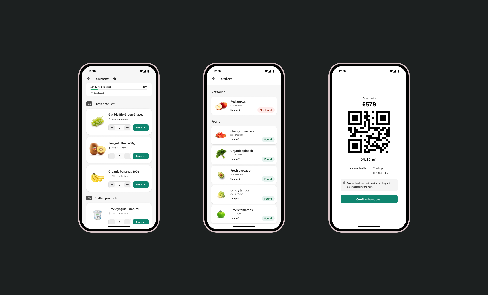
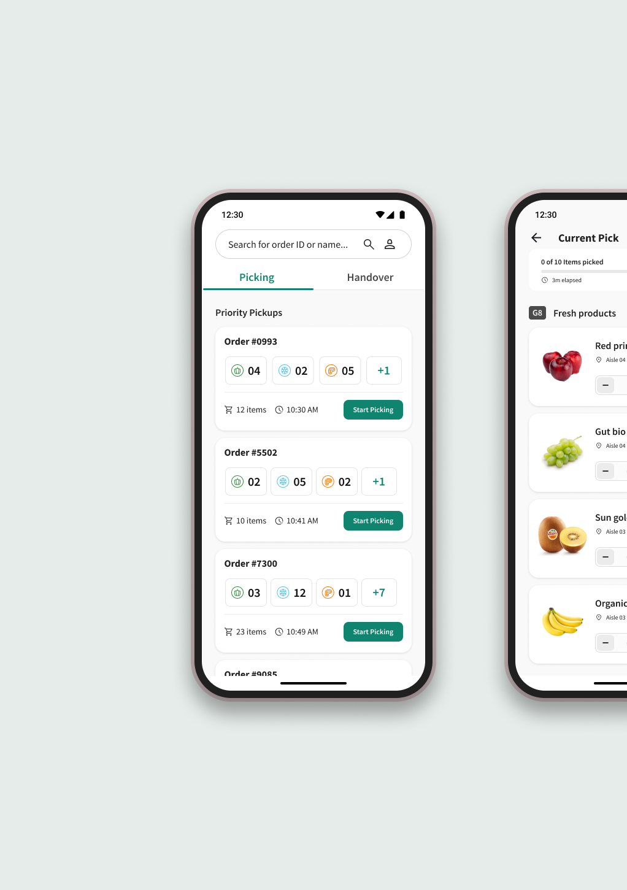

Onboarding, edge cases, and the workflow builder canvas
An AI-native workflow tool for operations teams. Built in a high-ambiguity environment with a founding team of six. I led design from the first whiteboard session through public launch — shaping product strategy, navigating AI UX patterns, and building trust with non-technical users who were deeply sceptical of automation.

Loops interface — AI suggestion layer on top of manual workflow
Operations teams run on repetition. The same approval chains, the same routing logic, the same exception handling — hundreds of times a week. The opportunity was clear: use AI to handle the pattern recognition, let humans handle the exceptions.
The challenge was trust. These users had been burned by automation before — by tools that broke silently, gave no explanation, and left them holding the consequences. Making AI feel reliable, not reckless, was the central design problem.

AI suggestion panel with confidence indicators and override controls
Solo designer on a founding team. I ran research sprints with early beta users, defined the AI transparency model (what the system shows about its reasoning, when it asks for confirmation, when it acts silently), and shipped the product design in eight weeks from first prototype.
I also pushed back on the original product scope. The v1 spec was too broad. I made the case — with data from six user interviews — to cut three features and ship a tighter core. That decision is what let us launch on time.
Onboarding, edge cases, and the workflow builder canvas
Loops launched to a 4.8 App Store rating. Onboarding completion improved 60% over our initial prototype. The trust model worked — users reported feeling "in control" even when the AI was doing most of the work, which was the exact thing we were designing for.
The company closed a Series A six months post-launch. The design system and AI transparency framework I built became a core part of the pitch deck.
Mobile experience, notification system, and analytics dashboard